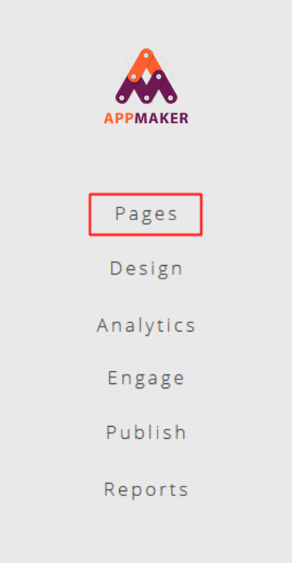
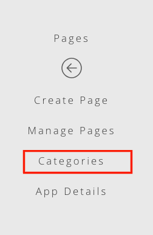
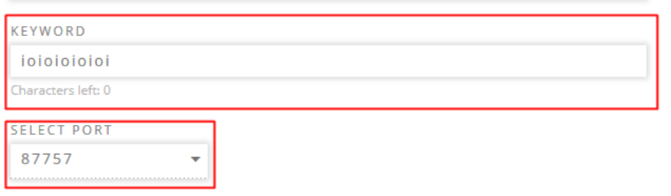

Help
Getting started.
1. After signing in click on the create new app button, which will take you to the template selection screen.
2. On the template selection screen select the template that you want to for the app by clicking on the “Select” button.
3. Enter the name of the Application in the text box and click on “Get Started” to open the app creation screen.

4. When the App creation menu opens you will be prompted to delete the default data. Click the “Yes” option to delete the default data and start creating your app.

Creating a category
1. To create a category within the app select the menu named “Pages” from the left menu pane. This will open the Pages sub-menu.
2. In the Pages sub-menu select the “Create Page” option, which will open the Page creation interface.

3. In the category management interface select the option “Add New Menu” to open the category creation screen.

4. To create the category type in the category name in the text box provided.

5. Then upload the category image. (Please note that entering a category name and image is compulsory in AppMaker.) To upload the image click on the browse image button, which will open a dialog box. From this dialog box you should select the image to be uploaded to the system.

6. Once the image is uploaded to the platform, a preview of the image will be shown. The platform gives you the option of cropping the image within the preview itself. After the image has been cropped click on the “Upload” button to upload the image.

7. After the image has been uploaded, click on the “Save” button to create the category. (Note: A preview of the active category image is shown under “Uploaded Images”

Creating a new page
1. To create a new article within the app select the menu named “Pages” from the left menu pane. This will open the Pages sub-menu.
2. In the Pages sub-menu select the “Create Page” option, which will open the Page creation interface.
3. To create the Page first select the category that the Page will come under.
4. Enter the title of the Page in the text box labelled “Title”.
5. Then select the date and time that the Page will be published by clicking on the calendar icon.
6. This will open a calendar. From the calendar select the required publication date. (Note: The Page will only be visible to users in the app after the publishing date)
7. After the publishing date has been entered, enter the expiration date using the same method. (Note: The Page will no longer be visible to users in the app after the expiration date)Once the expiration date has been set, scroll down to upload the Page image and select “Upload Image”. This will open a dialog box. From this dialog box you should select the image to be uploaded to the system. (NOTE: it is compulsory that an image be uploaded and that the first is an image only. The image cannot be linked to a Youtube link or replaced with a stand-alone Youtube link).
8. Once the image is uploaded to the platform, a preview of the image will be shown. The platform gives you the option of cropping the images to suit your requirement within the preview itself using the cropping tools. After the image has been cropped, click on the “Crop Image” button to upload the image.
9. A thumbnail of the uploaded image will be shown, once it has been successfully uploaded.
10. A thumbnail of the uploaded image will be shown, once it has been successfully uploaded.
Changing the look and feel of the Application
1. To change the look and feel of the application, within the app select the menu named “Design” from the left menu pane. This will open the Design sub-menu.
2. From the Design sub menu choose the menu option named “Styles”. This will open the interface to edit the look and feel of the application.
3. To change the background color of the application, navigate to the heading titled “App Background” on the left hand pane.
The color of the background can be changed by:
1. Clicking on the background button, which will open up a color palette. Then selecting the required color.
2. The color of the background can be changed by:
Clicking on the background button, which will open up a color palette. <Add a screenshot of the colour palatte>

3. Uploading an image by choosing the option “Edit Image”. (Note: For an uploaded image to be displayed, the background image check box needs to be checked)
4. To change the background color and font color of the navigation menu in the application, browse to the heading titled “Navigation” on the left hand pane.
The background color of the navigation menu can be changed by:
1. Clicking on the background button, which will open up a color palette.
2. Entering the hex value of the color in the input box
To change the font color of the navigation menu:
1. Clicking on the navigation font color button, which will open up a color palette. (screenshot of colour palette)To change the font color of the navigation menu:
2. Clicking on the navigation font color button, which will open up a color palette. (screenshot of colour palette)
To change the font type, size and color of the fonts used in the application, browse to the heading titled “Typography”
1. To change the type of font used for the header, select a font from the dropdown list under “Header Font”
2. To change the font size of the header font, select a font size from the dropdown list under “Header Font Size”.
3. To change the header font color, click on the color button under “Header Font Color” or enter the color hex code in the input box.
4. To change the type of font used for the content, select a font from the dropdown list under “Content Font
5. To change the font size of the content font, select a font size from the dropdown list under “Content Font Size”
6. To change the weight of the content font, select a font weight from the dropdown list under “Content Font Weight”.
7. To change the content font color, click on the color button under “Content Font Color” or enter the color hex code in the input box.
Publishing the Application
1. The first step is to add your contact details. To do this navigate to the App Details Menu (Path: Home -> Pages -> App Details -> Contact Us). The menu allows you to enter contact details that will enable your end users to get in touch with you. Only the email field is mandatory. (Please note that this information entered here will be visible to all users that download the app. Therefore, please be careful about the personal details you share)
After entering your contact us details, navigate to the “Submit for Approvals” sub menu. (Path: Home -> Publish -> Submit for approvals). The sub menu has two tabs. The first one is General, the second one Operator Configuration.
2. In the General Tab, enter the short description and long description for the app in their respective boxes. The short description is a succinct summary of the app. Whereas the long description gives more detailed information.
3. After entering the respective descriptions, you need to upload the images that will be used as the HI-RES Icon, feature graphic, and splash screen for the final app created by the AppMaker platform. Each of the
graphics should meet the following requirements:
HI-RES Icon- 512 x 512 pixels, PNG format
Feature Graphic – 1024 (width) x 500 (height) pixels, PNG format
Splash Screen
– 2732 x 2732 pixels, PNG format
NOTE: The images uploaded must meet this guidelines. Otherwise the system will throw an error message, and will not upload it.
To upload the image hover
the mouse of the respective box and a banner titled “Add Image” will display at the bottom of the box. Click on the banner to upload the image.

4. The final step in the General tab is to enter the keyword and the port. The keyword entered has to be unique, and is used by the end user to subscribe and un-subscribe himself from the service. The ports are pre-defined in the system and you only need to select one from the dropdown list.
5. Once all the information has been filled click the next button to be taken to the “Operator Configuration” tab.
6. In the operator configuration tab, click on the enabled check box to enable customers from that operator to subscribe and use the app that you have created. Clicking on the enable tab will allow you to elect whether you want to charge the customer daily or monthly (Note: Month = 30 days). After you have specified the subscription length you can specify the amount by entering it in the amount box.
7. To add another operator click on enable and follow the same process described above. Once you have enabled the operators and entered the required details click on save. This will submit your app for approval.
The approval process
1. Each stage of the approval process is visible to the App developer through Status page. This page shows the status for each operator that the app has been enabled for. The table below describes the stage of the approval process taking place for each status shown.
| Status | Description |
|---|---|
| Submitted for configuration | The app creator has created the app and submitted it for publishing. The request has been received by the AppMaker support team and they are working on the configurations required to make the app functional (i.e. charging) |
| Submitted for approval | The app creator has created the app and submitted it for publishing. The request has been received by the AppMaker support team and they are working on the configurations required to make the app functional (i.e. charging) |
| Approved |
The operator has approved the app. This means that customers in the approved operator can subscribe to the app. Therefore, you can market the app to customers from this operator. |
| Rejected |
The operator has rejected the app. Customers from this operator cannot subscribe to the app. |